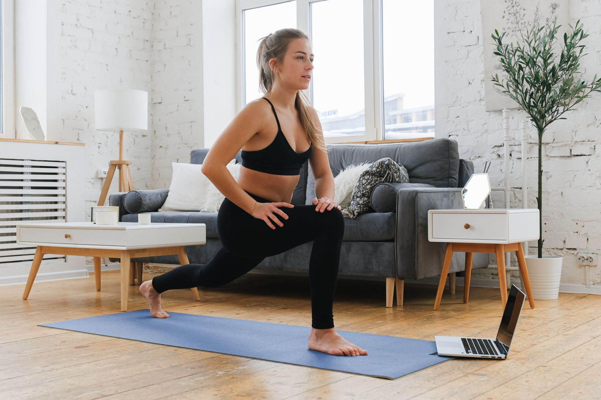

Comment choisir son tapis de sport pour s'entraîner à la maison (guide complet 2026)

20 minutes chez toi. Zéro excuse.
Le matériel qui vaut vraiment le coup, testé chez moi, sans blabla marketing. Pas de salle, pas d'abonnement, pas de perte de temps.
J'ai testé une bonne dizaine de modèles ces derniers mois. Voici ce qui fait vraiment la différence, et lequel j'utilise tous les jours.
Il y a un objet que tout le monde sous-estime au début, et qui fait pourtant la différence entre "je m'entraîne 3 fois par semaine depuis 6 mois" et "j'ai abandonné après 2 séances" : le tapis de sport.
Dans ce guide, on va voir exactement ce qui compte pour bien choisir le tien, sans te perdre dans du jargon marketing.
Pourquoi le tapis de sport est le premier achat à faire
Avant les haltères, avant l'élastique, avant la tenue technique : le tapis est ce qui te met en contact direct avec le sol à chaque séance. Un mauvais tapis, c'est :
- Des genoux et des coudes douloureux dès les premiers gainages ou pompes
- Un risque de glissade pendant un exercice dynamique
- Une odeur de plastique qui traîne des semaines dans la pièce
- Un objet tellement inconfortable que tu finis par éviter de t'entraîner
À l'inverse, un bon tapis rend chaque séance plus agréable, ce qui joue directement sur ta régularité — et la régularité, c'est 90 % du résultat en sport.
Les critères qui comptent vraiment
1. L'épaisseur
C'est le critère numéro un. En dessous de 6 mm, tu sens le sol dur à chaque appui. Pour du renforcement musculaire, du gainage ou du HIIT, vise plutôt 8 à 10 mm. Pour du yoga ou du stretching pur, 4 à 6 mm suffisent car tu es davantage debout ou en mouvement lent.
2. La matière
Trois matières dominent le marché :
- PVC — bon marché, mais souvent moins écologique et l'odeur au déballage est plus tenace
- TPE (élastomère thermoplastique) — le meilleur compromis en 2026 : léger, sans odeur forte, bonne adhérence, plus respectueux de l'environnement
- Caoutchouc naturel — excellente adhérence et durabilité, mais plus lourd et plus cher
Pour un usage polyvalent à la maison, le TPE reste le choix le plus sûr.
3. L'adhérence (double face)
Vérifie que le tapis a une bonne accroche sur les deux faces : une face qui ne glisse pas sur ton sol (carrelage, parquet), et une face texturée qui ne glisse pas sous tes mains ou tes pieds pendant l'effort. Un tapis qui bouge pendant une planche ou une fente, c'est le meilleur moyen de se blesser ou de se décourager.
4. Le poids et la portabilité
Si tu dois ranger ton tapis après chaque séance, un modèle trop lourd finit systématiquement par rester roulé dans un coin — et par ne plus jamais être ressorti. Un tapis TPE ou PVC standard pèse généralement entre 1 et 2,5 kg, ce qui reste facile à manipuler.
5. L'entretien
Un tapis qui ne se nettoie pas facilement devient vite un nid à bactéries, surtout si tu transpires beaucoup. Privilégie un modèle avec une surface qui se nettoie simplement avec un chiffon humide, sans absorber l'humidité en profondeur.
Ce qui compte moins qu'on le croit
- La couleur — purement esthétique, aucun impact sur la performance
- Les motifs "zen/yoga" — sympa visuellement, mais sans effet réel sur le confort
- La marque connue — certaines marques premium vendent le même type de mousse à un prix bien plus élevé sans réelle différence de qualité
Notre sélection
Pour un usage polyvalent (musculation, HIIT, gainage)
Un tapis TPE de 8-10 mm, double face antidérapante, est le choix le plus sûr pour quelqu'un qui débute et ne sait pas encore exactement quel type d'entraînement il va privilégier.
Un modèle 8mm en TPE, antidérapant sur les deux faces, qui tient sans bouger même en pompe intensive. Aucune odeur persistante, facile à rouler.
Voir le produit →Pour le yoga et le stretching
Un tapis plus fin (4-6 mm) en TPE, plus souple, permettra une meilleure sensation d'équilibre et de contact avec le sol pour les postures.
Un modèle fin et souple, idéal pour le contact au sol et les enchaînements dynamiques.
Voir le produit →Le budget à prévoir
Évite les tapis à moins de 12-15€ : la mousse est généralement trop fine et se tasse en quelques semaines. La fourchette 20-35€ offre le meilleur rapport qualité-prix pour un tapis qui dure réellement plusieurs années.
Les erreurs à éviter
- Acheter le premier prix sans vérifier l'épaisseur — tu le regretteras dès la première séance de gainage
- Négliger l'odeur au déballage — certains modèles bas de gamme sentent fort le plastique pendant des semaines ; laisse-le aérer 24-48h avant la première utilisation si besoin
- Choisir uniquement sur la couleur — ce critère n'a aucun impact sur ton entraînement
- Ne pas vérifier le poids si tu dois ranger le tapis quotidiennement
En résumé
Le tapis de sport n'est pas un accessoire secondaire : c'est la base sur laquelle repose tout le confort — et donc la régularité — de ton entraînement à la maison. Vise un modèle TPE, 8-10 mm, double face antidérapante, dans une fourchette de 20-35€, et tu as toutes les chances de t'entraîner sereinement pendant des années.
Une fois ton tapis choisi, pense aussi à ta tenue de sport pour t'entraîner à la maison — l'autre détail qui change vraiment le confort de tes séances.
Cet article contient des liens affiliés Amazon. Si tu achètes via ces liens, je touche une petite commission, sans surcoût pour toi. Cela m'aide à continuer à créer du contenu gratuit.